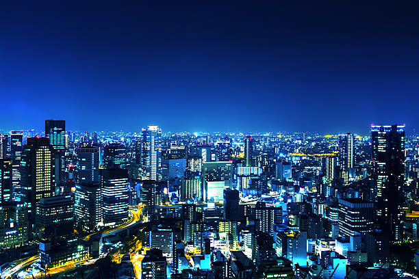
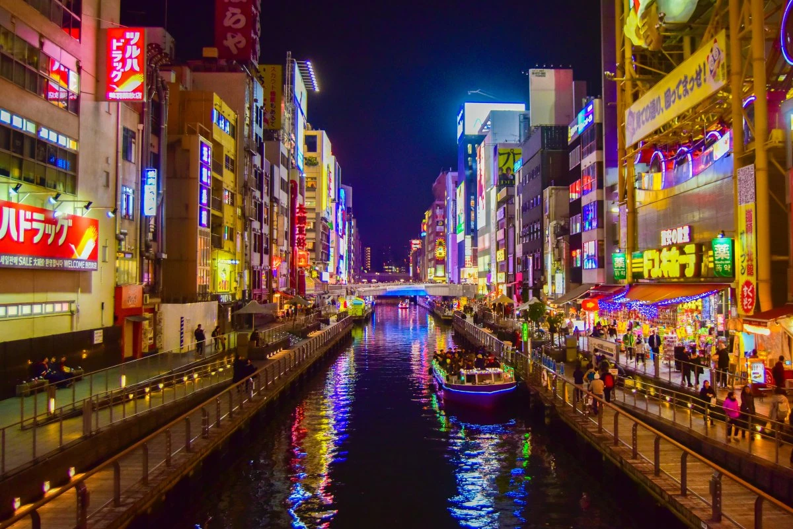
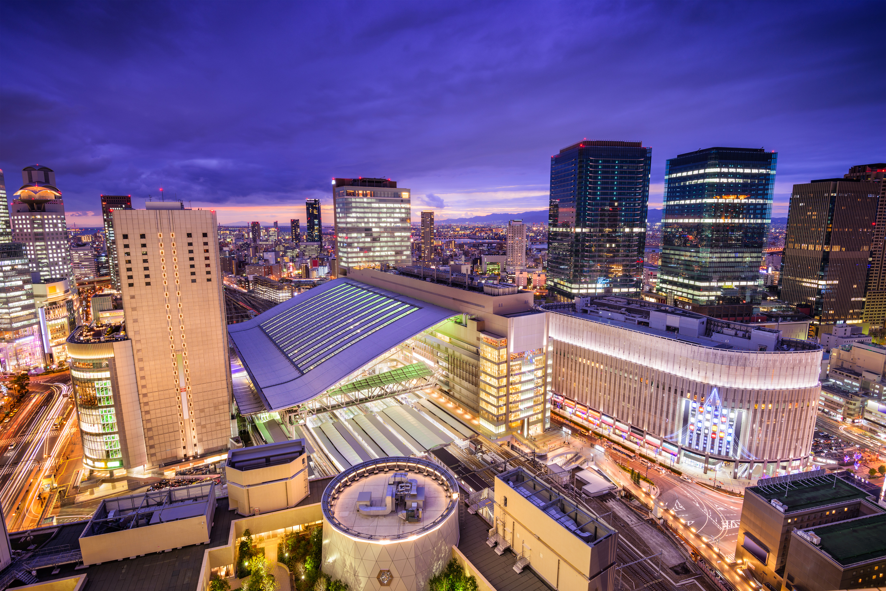
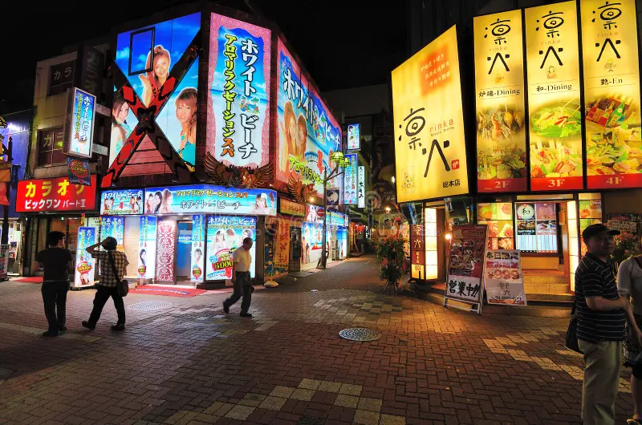
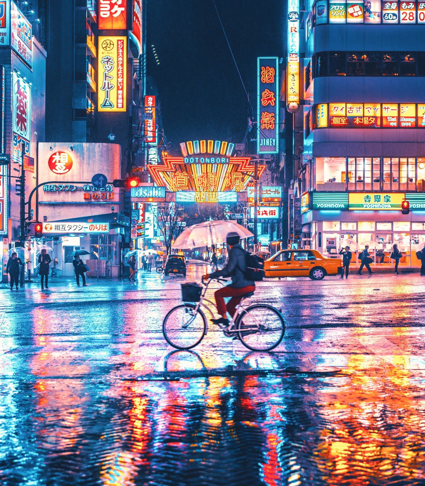

La Ciudad que Nunca Duerme
Osaka es un lugar donde la energía de la vida urbana se mezcla con una atmósfera futurista. Sus calles están dominadas por luces de neón, tecnología avanzada y una cultura vibrante que la hace destacar en el mundo cyberpunk.
Desde Dotonbori hasta el distrito de Umeda, Osaka vibra con una arquitectura iluminada y un estilo de vida hiperconectado.
📍 Ubicación y Mapa
Osaka es una ciudad vibrante donde la tecnología y el entretenimiento dominan:
- ⚡ Dotonbori - Epicentro de luces y vida nocturna.
- 🌆 Umeda - Centro financiero y comercial iluminado.
- 💠 Nipponbashi - Mercado tech y cultura geek.
Mapa interactivo de Osaka
🚀 Tecnología y Conectividad
Osaka es una ciudad hiperconectada con avances urbanos clave:
- 🔮 Infraestructura digital - Pantallas LED y edificios inteligentes.
- 🚄 Transporte avanzado - Tren de alta velocidad y metro automatizado.
- 🌐 Conectividad extrema - Internet de ultra alta velocidad.
🎭 Cultura Geek y Nocturna
Osaka fusiona tecnología con entretenimiento y cultura digital:
- 🎮 Nipponbashi - Distrito de tiendas electrónicas y gaming.
- 📱 Pagos digitales - Transacciones móviles en cada rincón.
- 🌆 Dotonbori - Vida nocturna con pantallas gigantes y luces de neón.
📷 Galería

Vista nocturna de Osaka
Dotonbori iluminado
Distrito financiero de Umeda
Nipponbashi y su tecnología avanzada
Luces neón en Osaka